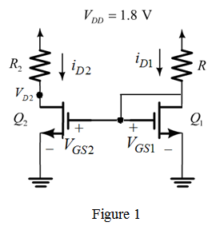

(a)
The drain current for transistor is,
From the circuit, the resistance  is,
is,
…… (1)
The drain current of transistor  is,
is,
Substitute for ,  for , for , for , and for in the equation.
for , for , for , and for in the equation.
From the circuit, the voltage  is,
is,
Refer to Figure E5.10 in the textbook.
Redraw the circuit by representing currents and voltages as shown in Figure 1.

(a)
The drain current for transistor is,
From the circuit, the resistance is,
…… (1)
The drain current of transistor is,
Substitute for , for , for , for , and for in the equation.
From the circuit, the voltage is,
Substitute  for
for  in equation (1).
in equation (1).
Thus, the resistance is, .
(b)
The drain current for transistor is,
From the circuit, the voltage  is,
is,
At the edge of saturation, the voltage . Substitute this in the equation.
From the circuit, the resistance  is,
is,
Substitute  for
for  in the equation.
in the equation.
Thus, the resistance  is, .
is, .
 , the drain current is,
, the drain current is,
Substitute for  ,
,  for , for , for , and
for , for , for , and  for in the equation.
for in the equation.
Thus, the width of transistor,  is, .
is, .